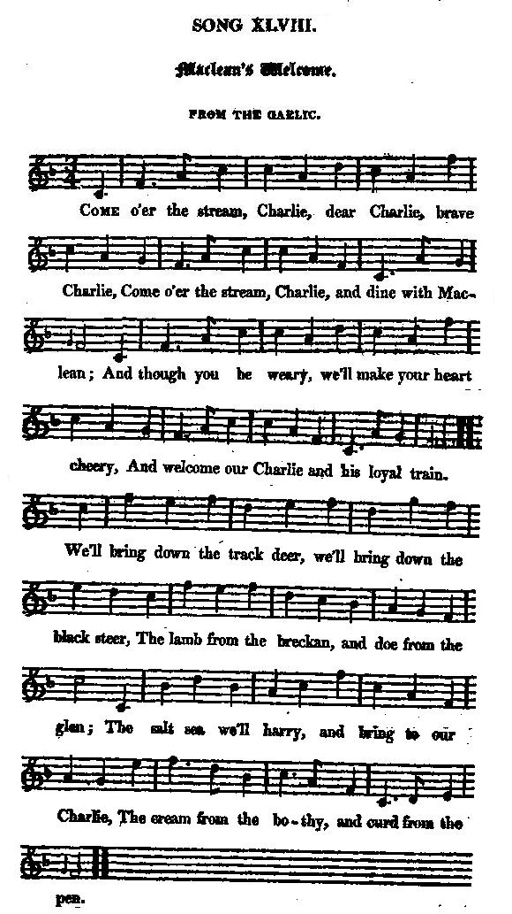
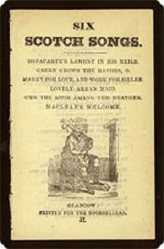

McLean's Welcome
Bienvenue chez McLean
"Come o'er the stream, Charlie"
from Hogg's "Jacobite Relics" 2nd Series N°48 page 90, 1821
Sequenced by Leslie Nelson-Burns (see Links)

|
To the tune:
"The air is beautiful, but the ingenious Captain Fraser has a better set of it in his collection; and I cannot help mentioning here, that though that gentleman has many Lowland melodies among his, so different in style from his own native music that the most common ear can distinguish them, yet, whether Highland or Lowland, his are always the best sets I have ever either seen or heard." (Hogg in a note to the tune in "Jacobite Relics 2nd series", 1821) In spite of this keen acknowledgment of Captain Fraser's work, search as I would, I could not find this tune among his Collection of "Airs and Melodies etc." My customary source, Andrew Kunz' "Fiddler's Companion" (cf. Links) quotes a series of recent collections where the tune is to be found, one of the authors he mentions, Christine Martin, stating that the tune appears in "the Ballroom" as the "Guracha, a Spanish dance", in 1827. A contributor to the "Mudcat Café" (see Links), Mr Jack Campin, writes that Gore's (modern) "Scottish Fiddle Music Index" quotes the song as figuring in "Gale's Pocket Companion for the German Flute or Violin" , kept in the National Library of Scotland, dating c. 1800 or earlier. |
A propos de la mélodie:
"L'air est très beau, mais le talentueux Capitaine Fraser en donne une version bien meilleure dans son recueil. Je ne peux m'empêcher ici de mentionner que, bien que ce monsieur ait introduit pas mal de mélodies des Basses Terres dans son recueil consacré aux Highlands et aux Hébrides, ce qui n'échappe pas à l'oreille la moins avertie, force est de reconnaître que, qu'il s'agisse d'airs des Highlands ou des Lowlands, les versions qu'il en donne sont toujours les meilleures que j'aie jamais lues ou écoutées." (Hogg dans une note sur le présent chant dans "Reliques", vol. 2.) Malgré cet hommage appuyé rendu à Simon Fraser, j'ai eu beau scruter le recueil du capitaine, "Air et mélodies...", je n'y ai pas trouvé l'air en question. Ma source habituelle, le "Fiddler's Companion" d'Andrew Kunz (cf. liens) ne liste que des recueils modernes incluant cet air. Dans l'un d'entre eux, Christine Martin indique que la mélodie apparaît dans "The Ballroom", en 1827, sous le titre "Guracha, danse espagnole". Un correspondant du "Mudcat Café" (cf.liens), M. Jack Campin, indique que le (moderne) "Scottish Fiddle Music Index" cite ce chant comme figurant dans le "Vadémécum pour flute allemande ou violon" de Gale , conservé à la National Library of Scotland, et datant d'environ 1800 au plus tard. |
|
"From the Gaelic:"
In the same note Hogg clarifies what he means by this phrase: "I May here mention, once for all, that these songs from the Gaelic were mostly sent to me by different hands, translated simply into English prose, and have all been versified by me , save those mentioned in the notes as having been done by others: so that it must be remarked, they are rather imitations from the Gaelic than anything else. To have versified the short sentences from the Gaelic literally, was impossible. I trust, however, that those acquainted with the originals will confess that they have lost nothing in going through my hands exclusive of the Gaelic idioms, endeared to the natives from infancy, which must all vanish in any translation whatsoever. Yet even in these abrupt Highland Ossianic sentences, there seems to be something of the raw material and spirit of poetry, for I never got any notes of words so easily turned into songs. Some part of the beverage promised to prince Charles in this song, by " his friend the McLean," are certainly of a very singular nature, but not one of these is added to the original." Does that Gaelic original still exist? In his "Highland songs of the '45", John Lorne Campbell notes, p.xxi, that "There can be no doubt that a great amount of material has become lost for ever. As evidence of this, there are 13 poems in Hogg's 'Jacobite Relics,2nd volume (JR2) 'translated from the Gaelic' of which I have not discovered one original version ... The result [of his "translations"] is something very unlike Gaelic poetry." For his part, William Donaldson, in "The Jacobite song: political myth and national identity" (Aberdeen, 1988) concludes that Hogg wrote these pieces that have "a very strong family likeness to one another [and] suddenly appear for the first time in the JR2..." For the song Hill of Lochiel , Gaelic lyrics are still extant, but are quite different from Hogg's poem and free of any Jacobite import. |
"Traduit du gaélique:"
Dans la même note Hogg explicite ce qu'il entend par cette expression: "Puis-je indiquer ici, une fois pour toutes, que ces chants gaéliques m'ont été envoyés de plusieurs sources, simplement traduits en prose anglaise et que je les ai tous mis en vers, sauf mention expresse d'une autre personne? De sorte que ce sont plus des imitations du gaélique qu'autre chose. Mettre en vers directement ces courtes phrases gaéliques m'eût été impossible. Je suis sûr pourtant, que ceux qui connaissent les originaux admettront que, hormis le tribut inévitable qu'exige toute traduction, ils n'ont rien perdu de leur saveur première en passant entre mes mains inaptes à manier ces idiomes qu'ils ont pratiqués dès l'enfance. Et les phrases brutales, façon Ossian, qui furent ma matière première étaient sans aucun doute animées du souffle poétique de l'original, car jamais je n'ai reçu de paroles collectées aussi faciles à transformer en texte chantable. Certains des breuvages promis au prince Charles par son "Ami McLean" peuvent sembler bien étranges. Pourtant dans mon énumération je n'ai pas surenchéri sur l'original. Le texte original gaélique existe-t-il encore? Dans ses "Chants des Highlands de 1745", John Lorne Campbell remarque, p.xxi, que "Sans aucun doute, une grande partie de ces chants est perdue à jamais. J'en veux pour preuve les 13 poèmes du 2ème vol. des "Reliques" (JR2) de Hogg 'traduits du gaélique', dont je n'ai pu découvrir aucune version originale ...Le résultat [de ces traductions] ne ressemble guère à de la poésie gaélique." L' auteur de "Chant Jacobite: mythe politique et identité nationale" (Aberdeen, 1988), William Donaldson, arrive, quant à lui, à la conclusion que ces textes sont de Hogg , vu "leur air de famille [et] leur brusque apparition pour la première fois dans les JR2..." . Pour le chant Colline de Lochiel , il existe un texte gaélique très différent du texte de Hogg et dépourvu de toute allusion au Jacobitisme. |

|
Chorus:
Come o'er the stream, Charlie Dear Charlie, brave Charlie, Come o'er the stream, Charlie, And dine wi' McLean! [1] And though you be weary, We'll make your heart cheery, And welcome our Charlie And his loyal train! 1. We'll bring doon the track deer We'll bring doon the black steer The lamb from the breckan And doe from the glen The salt sea we'll harry And bring to our Charlie The cream from the bothy And curd frae the pen Chorus:
2. And you will drink freely
3. O'er heath-bells shall trace you
4. If aught will invite you,
|
 In this "Chapbook" (c. 1840), the song appears along with 5 other ballads: Bonaparte's Lament in his Exile, Green grow the Rashes, etc... |
Refrain:
Franchis la rivière, Cher Charlie, fier Charlie, Franchis la rivière, Dîne chez McLean! [1] Oublie ta fatigue, Et que se dérident, Tes traits, noble guide, Viens, toi et les tiens!
1. Que veux-tu? La biche
2. Tu boiras sans voiles
3. Parmi les bruyères
4. Accepte l'invite!
(Trad. Ch.Souchon(c)2003) |
|
[1]
McLean
: When the 1715 Jacobite army was being formed the McLeans of Duart were there with their
Baronet Hector
. He stayed in Edinburgh to organise the 1745 Jacobite struggle but was imprisoned for his efforts. He died in Rome in 1750.
Maclean of Drimmin led the Clan throughout the whole of the campaign but was killed at the battle of Culloden: On dark Culloden's bloody heath Drimnin's claymore leaped from his sheath, Prince Charlie to deliver there! But vain the fight ; in pitchy night His star went down forever there! from "Nine noted Chiefs of McLean" by Prof. J; S. Blackie (1809 - 1895) To these two McLeans should be added today another staunch Scotsman: Sean Connery (by his mother)! See also the next song, Gathering of Clan McLean . [2] "When kings do not ken" : That is to say "moonshine (distillation during the night on account of the odour)", "whisky free of malt tax ". In 1644 the Scottish Covenanting parliament introduced the Malt Tax It was an unpopular piece of legislation and was incredibly difficult to collect. The tax remained in force until 1707. In 1714 the Malt Tax was reinstated. The variance in measurements often found Scotland unfairly taxed, the Scots rioted and much blood was shed in the resulting military suppression. In 1725 during the Glasgow Malt Tax Riots, 14 were shot dead by the Army under General Wade after threats to Excise officers. The matter was finally settled by imposing a malt duty at half the English rate. The excise duty on salt was another unpopular tax. (Source: www.bruichladdich.com). [3] "The loveliest Mari" : Surprisingly, this verse is mostly left out in the relevant literature. |
[1]
McLean
: Lors de la constitution d'une armée Jacobite en 1715, les Maclean de Duart participèrent, conduits par le
Baronnet Hector
. En 1745 celui-ci resta à Edimbourg pour y organiser la lutte Jacobite et fut emprisonné pour cette raison. Il mourut à Rome en 1750.
Maclean de Drimmin fut le chef militaire du Clan pendant toute la campagne et fut tué à Culloden. A Culloden, sanglante lande Drimmin dégaina son claymore, Prince Charles, pour te défendre. Vain combat: quand ce fut l'aurore Cet astre venait de s'éteindre! tiré de "Neuf chefs fameux du Clan McLean" du Prof. J. S. Blackie (1809 - 1895) A ces deux McLean fameux, il convient d'ajouter aujourd'hui un autre militant, Sean Connery (McLean par sa mère)! Cf. chant suivant, Le rassemblement du Clan McLean . [2] "A l'insu des rois" : En d'autres termes: "du whisky qui n'a pas acquitté la taxe sur le malt" (désigné aussi par le mot anglais "moonshine" qui fait allusion à une distillation nocturne du fait de l'odeur). En 1664 le Parlement Covenantaire Ecossais introduisit la Taxe sur le malt . C'était un texte légal impopulaire et particulièrement difficile à mettre en oeuvre. Cet impôt resta en vigueur jusqu'en 1707. En 1714 il fut réintroduit. Les multiples systèmes de poids et mesures défavorisaient souvent l'Ecosse conduisant à des émeutes réprimées de façon sanglante par la troupe. En 1725, au cours des émeutes de Glasgow contre les agents de l'Accise (=contributions indirectes), la répression conduite par le général Wade fit 14 morts. On dut se résoudre à abaisser les droits à la moitié de ceux en vigueur en Angleterre. Le droit d'accise sur le sel était, lui aussi très impopulaire. (Source: www.bruichladdich.com). [3] "La jolie Mari" : On peut s'étonner que cette strophe soit rarement citée dans les ouvrages spécialisés. |
The "Corries" sing "Come o'er the stream"